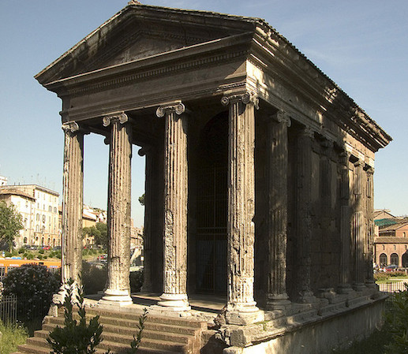
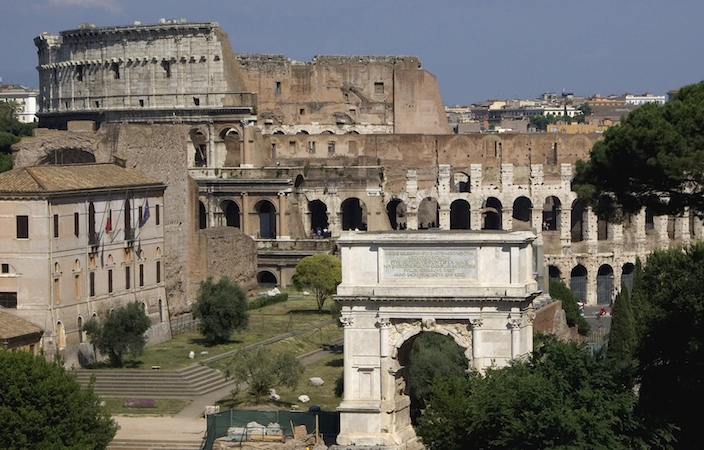

Architecture

An example of post and lintel architecture: Hera II, Paestum, c. 460 B.C.E. (Classical period), tufa, 24.26 x 59.98 m

Temple of Portunus (formerly known as, Fortuna Virilis),c. 120-80 B.C.E., structure is travertine and tufa, Rome

Arch of Titus (foreground) with the Colloseum in the background, photo by Steven Zucker(Credits)(CC BY-NC-SA 2.0)